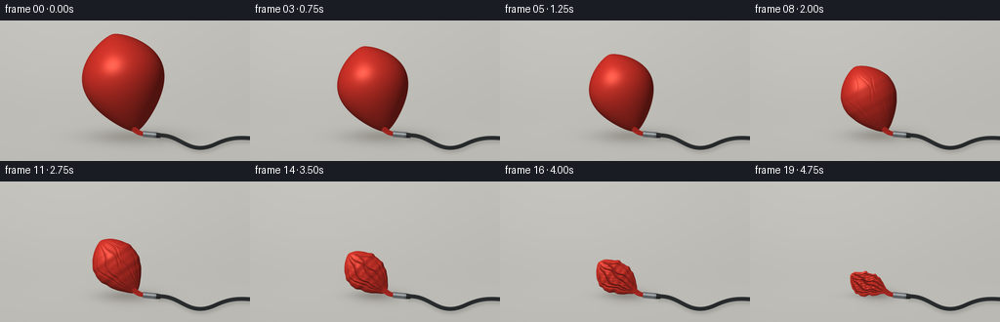
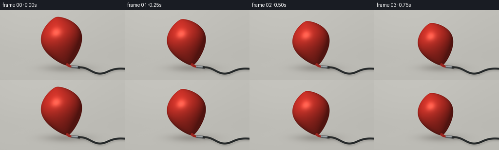

CODING AGENTS AS PIXEL WORLD MODELS
traex/GPT-6.1-Sol · mechanics_0024
点击播放 · 原生 RGB 像素
逐轮保存的候选
回放视频、检查图与代码变化。
每份候选均可单独播放。实际图片检查记录在下方工具轨迹中。
候选 01播放与检查图
点击播放 · 原生 RGB 像素


展开代码变化
--- 上一保存版本
+++ 本次保存版本
@@ -0,0 +1,173 @@
+"""Procedural studio timelapse: sealed latex balloon, evacuated through a hose."""
+from pathlib import Path
+import json
+import numpy as np
+from PIL import Image, ImageDraw, ImageFilter
+import artifact_io
+
+ROOT = Path(__file__).resolve().parent
+SPEC = json.loads((ROOT / 'task_spec.json').read_text())
+W, H = SPEC['width'], SPEC['height']
+S = 3
+x, y = np.meshgrid((np.arange(W*S)+.5)/S, (np.arange(H*S)+.5)/S)
+rng = np.random.default_rng(143)
+noise = rng.normal(0, .4, x.shape)
+
+# The neutral seamless tabletop has a very broad, soft studio light.
+base = np.empty((*x.shape, 3), float)
+illum = 7*np.exp(-((x-68)/145)**2-((y-20)/120)**2)
+for c, b in enumerate((190, 189, 183)):
+ base[..., c] = b + illum - .055*y + noise*.28
+base += 3.7/(1+np.exp(-(y-106)/7))[..., None]
+
+def over(img, color, alpha):
+ return img*(1-alpha[..., None]) + np.asarray(color)*alpha[..., None]
+
+def cubic(a,b,c,d,nn=220):
+ t = np.linspace(0,1,nn)[:,None]
+ return (1-t)**3*np.array(a) + 3*(1-t)**2*t*np.array(b)+3*(1-t)*t*t*np.array(c)+t**3*np.array(d)
+
+hose_path = cubic((163,117.7),(186,117),(193,139),(220,127))
+hose_path = np.concatenate((hose_path,cubic((220,127),(237,119),(246,120),(262,121))))
+# Distance field of the hose, used for a rounded black rubber cross section.
+dist = np.full(x.shape, 1e3)
+for p in hose_path[::2]:
+ dist = np.minimum(dist, np.hypot(x-p[0], y-p[1]))
+hose_alpha = np.clip((2.15-dist)*S,0,1)
+hose_shadow = np.full(x.shape, 1e3)
+for p in hose_path[::3]:
+ hose_shadow = np.minimum(hose_shadow, np.hypot(x-p[0]-1, y-p[1]-2.6))
+base = over(base, (95,93,89), .25*np.exp(-hose_shadow**2/11))
+hose_col = np.empty_like(base)
+hose_light = np.exp(-((dist-.85)/.47)**2)
+for i,b in enumerate((30,34,35)):
+ hose_col[...,i]=b+18*hose_light + 2*np.sin(x*.11)
+base=over(base,hose_col,hose_alpha)
+
+# The narrow stainless-steel extraction coupling is fixed throughout the shot.
+def connector(img):
+ angle=.095
+ xx=(x-154)*np.cos(angle)+(y-117)*np.sin(angle)
+ yy=-(x-154)*np.sin(angle)+(y-117)*np.cos(angle)
+ alpha=np.clip((3.15-np.abs(yy))*S,0,1)*np.clip((7.8-np.abs(xx))*S,0,1)
+ shade=85+95*np.exp(-((yy+.9)/1.25)**2)+24*np.exp(-((yy-2.1)/.45)**2)
+ shade-=28*np.exp(-((xx-4.9)/.45)**2)+18*np.exp(-((xx+4.4)/.25)**2)
+ c=np.stack((shade*.95,shade*.99,shade*1.015),axis=-1)
+ img=over(img,c,alpha)
+ # Dark compression sleeve and its very fine rings.
+ al=np.clip((2.7-np.abs(yy))*S,0,1)*np.clip((2.35-np.abs(xx-8.2))*S,0,1)
+ sh=31+18*np.exp(-((yy+.8)/.8)**2)+5*np.cos(xx*6)
+ img=over(img,np.stack((sh,sh*1.06,sh*1.08),axis=-1),al)
+ return img
+
+
+def render(t):
+ # Pressure falls steadily; sag and buckling increase as the latex goes slack.
+ q=t**.88
+ length=103-62*q
+ radius=43-30*q
+ sag=t**1.65
+ theta=.235+.91*sag
+ axis=np.array([-np.sin(theta),-np.cos(theta)])
+ side=np.array([np.cos(theta),-np.sin(theta)])
+ root=np.array([139.5,114.0])
+ dx=x-root[0]; dy=y-root[1]
+ u=(dx*axis[0]+dy*axis[1])/length
+ v=dx*side[0]+dy*side[1]
+ uc=np.clip(u,0,1)
+ # A balloon is widest just above its midpoint, tapering toward its mouth.
+ prof=np.sin(np.pi*uc)**.67*(.79+.38*uc)
+ buckle=np.clip((t-.30)/.70,0,1)**1.45
+ wav=buckle*(.041*np.sin(28*uc+1.1)+.027*np.sin(49*uc-.7))
+ rad=radius*prof*(1+wav)
+ mid=buckle*(1.4*np.sin(7*uc)+.45*np.sin(21*uc))
+ vv=v-mid
+ w=vv/np.maximum(rad,.0001)
+ mask=(u>0)&(u<1)&(np.abs(w)<1)
+ # Thickness collapses substantially faster than the apparent footprint.
+ thick=.85*(1-.84*t**1.5)
+ zz=thick*rad*np.sqrt(np.maximum(0,1-w*w))
+ crease=np.zeros_like(x)
+ ridges=np.zeros_like(x)
+ # Long irregular latex folds converge on the stationary mouth.
+ for offset,ph,amp in [(-.65,.4,.7),(-.34,2.0,1.0),(.03,3.5,.85),(.40,1.4,.85),(.70,4.8,.55)]:
+ line=offset+.115*np.sin(uc*6.5+ph)+.045*np.sin(uc*16+ph)
+ d=w-line
+ width=.030+.025*(1-uc)
+ envelope=(np.sin(np.pi*uc)**.6)*np.clip((1-np.abs(w))*4,0,1)
+ c=np.exp(-(d/width)**2)*envelope
+ r=np.exp(-((d-width*1.8)/(width*1.1))**2)*envelope
+ crease+=c*amp
+ ridges+=r*amp
+ zz+=buckle*(-2.65*crease+1.15*ridges)
+ # Fine diagonal puckering only appears late in the process.
+ fine=buckle**2*.19*np.sin(58*uc+8*w)*np.sin(18*w+5*uc)
+ zz+=fine*np.clip(1-w*w,0,1)
+ zz=np.where(mask,np.maximum(zz,.02),0)
+ zy,zx=np.gradient(zz,1/S,1/S)
+ normals=np.stack((-zx,-zy,np.ones_like(zx)),axis=-1)
+ normals/=np.linalg.norm(normals,axis=-1,keepdims=True)
+ light=np.array([-.43,-.56,.708]); light/=np.linalg.norm(light)
+ lam=np.maximum(0,normals@light)
+ view=np.array([0,0,1.])
+ half=(light+view)/np.linalg.norm(light+view)
+ spec=np.maximum(0,normals@half)**42
+ soft=np.maximum(0,normals@half)**7
+ # Slightly satin latex, never a glass or metallic material.
+ material=np.array([202.,48.,39.])
+ shade=.39+.62*lam
+ rgb=material*shade[...,None]
+ rgb+=soft[...,None]*np.array([13.,8.,6.])
+ rgb+=spec[...,None]*np.array([65.,51.,43.])*(1-.35*t)
+ rgb*= (1-.10*buckle*crease)[...,None]
+ rgb+=noise[...,None]*.55
+ # Soft warm bounce from the tabletop around the lower-facing surface.
+ bounce=np.maximum(0,normals[...,1])*.06
+ rgb+=bounce[...,None]*np.array([77,57,43])
+ alpha=np.clip((rad-np.abs(vv))*S,0,1)*np.clip(u*length*S,0,1)*np.clip((1-u)*length*S,0,1)
+ img=base.copy()
+ # A contact shadow and diffuse cast shadow continuously track the shrinking skin.
+ center=root+axis*(length*.44)
+ sy=116+3*(1-t)
+ sx=center[0]+6
+ sw=radius*.89+5
+ sh=4.7+radius*.06
+ shadow=.20*np.exp(-((x-sx)/sw)**2-((y-sy)/sh)**2)
+ shadow+=.095*np.exp(-((x-sx-7)/(sw*1.15))**2-((y-sy-1)/(sh*1.5))**2)
+ if t>.4:
+ shadow+=.11*buckle*np.exp(-((x-center[0])/24)**2-((y-117)/3.1)**2)
+ img=over(img,(65,58,52),np.clip(shadow,0,.6))
+ img=over(img,rgb,alpha)
+ # A short stretched neck joins the balloon to an airtight coupling.
+ # It is drawn after the body so the small mouth retains its rubber rim.
+ neckpath=cubic((138,112),(141,114.4),(143,116),(149,116.5),65)
+ nd=np.full(x.shape,1e3)
+ nearest=np.zeros_like(x)
+ for j,p in enumerate(neckpath):
+ dd=np.hypot(x-p[0],y-p[1])
+ sel=dd<nd
+ nearest=np.where(sel,j/(len(neckpath)-1),nearest)
+ nd=np.minimum(nd,dd)
+ nr=2.3+.7*(1-nearest)
+ na=np.clip((nr-nd)*S,0,1)
+ nl=15*np.exp(-((y-114.9)/.6)**2)
+ nc=np.stack((153+nl,35+nl*.55,29+nl*.4),axis=-1)
+ img=over(img,nc,na)
+ # Rolled latex lip tightly wrapped over the steel nipple.
+ lip=np.clip((1.0-np.abs(x-147.7))*S,0,1)*np.clip((3.1-np.abs(y-116.3))*S,0,1)
+ lc=np.stack((179+15*np.exp(-((y-114.8)/.8)**2),42+8*np.exp(-((y-114.8)/.8)**2),34+6*np.exp(-((y-114.8)/.8)**2)),axis=-1)
+ img=over(img,lc,lip)
+ img=connector(img)
+ im=Image.fromarray(np.uint8(np.clip(img,0,255)))
+ return np.asarray(im.resize((W,H),Image.Resampling.LANCZOS))
+
+
+def main():
+ frames=[]
+ for k in range(SPEC['frames']):
+ frames.append(render(k/(SPEC['frames']-1)))
+ artifact_io.save(np.asarray(frames,dtype=np.uint8),ROOT)
+ print(f'Saved {len(frames)} RGB frames at {W}x{H}, {SPEC["fps"]} fps.')
+
+if __name__=='__main__':
+ main()
可观测工具轨迹
实际执行的命令与返回图片。
命令 1exit 0
/bin/bash -lc 'ls -la; cat prompt.txt; cat GENERATION_RULES.md; cat task_spec.json'
命令 2exit 0
/bin/bash -lc "cat artifact_io.py; python - <<'PY' import importlib.util for x in ['numpy','PIL','scipy']: print(x, bool(importlib.util.find_spec(x))) PY"
命令 3exit 0
/bin/bash -lc "cat > generate.py <<'PY'
\"\"\"Procedural studio timelapse: sealed latex balloon, evacuated through a hose.\"\"\"
from pathlib import Path
import json
import numpy as np
from PIL import Image, ImageDraw, ImageFilter
import artifact_io
ROOT = Path(__file__).resolve().parent
SPEC = json.loads((ROOT / 'task_spec.json').read_text())
W, H = SPEC['width'], SPEC['height']
S = 3
x, y = np.meshgrid((np.arange(W*S)+.5)/S, (np.arange(H*S)+.5)/S)
rng = np.random.default_rng(143)
noise = rng.normal(0, .4, x.shape)
# The neutral seamless tabletop has a very broad, soft studio light.
base = np.empty((*x.shape, 3), float)
illum = 7*np.exp(-((x-68)/145)**2-((y-20)/120)**2)
for c, b in enumerate((190, 189, 183)):
base[..., c] = b + illum - .055*y + noise*.28
base += 3.7/(1+np.exp(-(y-106)/7))[..., None]
def over(img, color, alpha):
return img*(1-alpha[..., None]) + np.asarray(color)*alpha[..., None]
def cubic(a,b,c,d,nn=220):
t = np.linspace(0,1,nn)[:,None]
return (1-t)**3*np.array(a) + 3*(1-t)**2*t*np.array(b)+3*(1-t)*t*t*np.array(c)+t**3*np.array(d)
hose_path = cubic((163,117.7),(186,117),(193,139),(220,127))
hose_path = np.concatenate((hose_path,cubic((220,127),(237,119),(246,120),(262,121))))
# Distance field of the hose, used for a rounded black rubber cross section.
dist = np.full(x.shape, 1e3)
for p in hose_path[::2]:
dist = np.minimum(dist, np.hypot(x-p[0], y-p[1]))
hose_alpha = np.clip((2.15-dist)*S,0,1)
hose_shadow = np.full(x.shape, 1e3)
for p in hose_path[::3]:
hose_shadow = np.minimum(hose_shadow, np.hypot(x-p[0]-1, y-p[1]-2.6))
base = over(base, (95,93,89), .25*np.exp(-hose_shadow**2/11))
hose_col = np.empty_like(base)
hose_light = np.exp(-((dist-.85)/.47)**2)
for i,b in enumerate((30,34,35)):
hose_col[...,i]=b+18*hose_light + 2*np.sin(x*.11)
base=over(base,hose_col,hose_alpha)
# The narrow stainless-steel extraction coupling is fixed throughout the shot.
def connector(img):
angle=.095
xx=(x-154)*np.cos(angle)+(y-117)*np.sin(angle)
yy=-(x-154)*np.sin(angle)+(y-117)*np.cos(angle)
alpha=np.clip((3.15-np.abs(yy))*S,0,1)*np.clip((7.8-np.abs(xx))*S,0,1)
shade=85+95*np.exp(-((yy+.9)/1.25)**2)+24*np.exp(-((yy-2.1)/.45)**2)
shade-=28*np.exp(-((xx-4.9)/.45)**2)+18*np.exp(-((xx+4.4)/.25)**2)
c=np.stack((shade*.95,shade*.99,shade*1.015),axis=-1)
img=over(img,c,alpha)
# Dark compression sleeve and its very fine rings.
al=np.clip((2.7-np.abs(yy))*S,0,1)*np.clip((2.35-np.abs(xx-8.2))*S,0,1)
sh=31+18*np.exp(-((yy+.8)/.8)**2)+5*np.cos(xx*6)
img=over(img,np.stack((sh,sh*1.06,sh*1.08),axis=-1),al)
return img
def render(t):
# Pressure falls steadily; sag and buckling increase as the latex goes slack.
q=t**.88
length=103-62*q
radius=43-30*q
sag=t**1.65
theta=.235+.91*sag
axis=np.array([-np.sin(theta),-np.cos(theta)])
side=np.array([np.cos(theta),-np.sin(theta)])
root=np.array([139.5,114.0])
dx=x-root[0]; dy=y-root[1]
u=(dx*axis[0]+dy*axis[1])/length
v=dx*side[0]+dy*side[1]
uc=np.clip(u,0,1)
# A balloon is widest just above its midpoint, tapering toward its mouth.
prof=np.sin(np.pi*uc)**.67*(.79+.38*uc)
buckle=np.clip((t-.30)/.70,0,1)**1.45
wav=buckle*(.041*np.sin(28*uc+1.1)+.027*np.sin(49*uc-.7))
rad=radius*prof*(1+wav)
mid=buckle*(1.4*np.sin(7*uc)+.45*np.sin(21*uc))
vv=v-mid
w=vv/np.maximum(rad,.0001)
mask=(u>0)&(u<1)&(np.abs(w)<1)
# Thickness collapses substantially faster than the apparent footprint.
thick=.85*(1-.84*t**1.5)
zz=thick*rad*np.sqrt(np.maximum(0,1-w*w))
crease=np.zeros_like(x)
ridges=np.zeros_like(x)
# Long irregular latex folds converge on the stationary mouth.
for offset,ph,amp in [(-.65,.4,.7),(-.34,2.0,1.0),(.03,3.5,.85),(.40,1.4,.85),(.70,4.8,.55)]:
line=offset+.115*np.sin(uc*6.5+ph)+.045*np.sin(uc*16+ph)
d=w-line
width=.030+.025*(1-uc)
envelope=(np.sin(np.pi*uc)**.6)*np.clip((1-np.abs(w))*4,0,1)
c=np.exp(-(d/width)**2)*envelope
r=np.exp(-((d-width*1.8)/(width*1.1))**2)*envelope
crease+=c*amp
ridges+=r*amp
zz+=buckle*(-2.65*crease+1.15*ridges)
# Fine diagonal puckering only appears late in the process.
fine=buckle**2*.19*np.sin(58*uc+8*w)*np.sin(18*w+5*uc)
zz+=fine*np.clip(1-w*w,0,1)
zz=np.where(mask,np.maximum(zz,.02),0)
zy,zx=np.gradient(zz,1/S,1/S)
normals=np.stack((-zx,-zy,np.ones_like(zx)),axis=-1)
normals/=np.linalg.norm(normals,axis=-1,keepdims=True)
light=np.array([-.43,-.56,.708]); light/=np.linalg.norm(light)
lam=np.maximum(0,normals@light)
view=np.array([0,0,1.])
half=(light+view)/np.linalg.norm(light+view)
spec=np.maximum(0,normals@half)**42
soft=np.maximum(0,normals@half)**7
# Slightly satin latex, never a glass or metallic material.
material=np.array([202.,48.,39.])
shade=.39+.62*lam
rgb=material*shade[...,None]
rgb+=soft[...,None]*np.array([13.,8.,6.])
rgb+=spec[...,None]*np.array([65.,51.,43.])*(1-.35*t)
rgb*= (1-.10*buckle*crease)[...,None]
rgb+=noise[...,None]*.55
# Soft warm bounce from the tabletop around the lower-facing surface.
bounce=np.maximum(0,normals[...,1])*.06
rgb+=bounce[...,None]*np.array([77,57,43])
alpha=np.clip((rad-np.abs(vv))*S,0,1)*np.clip(u*length*S,0,1)*np.clip((1-u)*length*S,0,1)
img=base.copy()
# A contact shadow and diffuse cast shadow continuously track the shrinking skin.
center=root+axis*(length*.44)
sy=116+3*(1-t)
sx=center[0]+6
sw=radius*.89+5
sh=4.7+radius*.06
shadow=.20*np.exp(-((x-sx)/sw)**2-((y-sy)/sh)**2)
shadow+=.095*np.exp(-((x-sx-7)/(sw*1.15))**2-((y-sy-1)/(sh*1.5))**2)
if t>.4:
shadow+=.11*buckle*np.exp(-((x-center[0])/24)**2-((y-117)/3.1)**2)
img=over(img,(65,58,52),np.clip(shadow,0,.6))
img=over(img,rgb,alpha)
# A short stretched neck joins the balloon to an airtight coupling.
# It is drawn after the body so the small mouth retains its rubber rim.
neckpath=cubic((138,112),(141,114.4),(143,116),(149,116.5),65)
nd=np.full(x.shape,1e3)
nearest=np.zeros_like(x)
for j,p in enumerate(neckpath):
dd=np.hypot(x-p[0],y-p[1])
sel=dd<nd
nearest=np.where(sel,j/(len(neckpath)-1),nearest)
nd=np.minimum(nd,dd)
nr=2.3+.7*(1-nearest)
na=np.clip((nr-nd)*S,0,1)
nl=15*np.exp(-((y-114.9)/.6)**2)
nc=np.stack((153+nl,35+nl*.55,29+nl*.4),axis=-1)
img=over(img,nc,na)
# Rolled latex lip tightly wrapped over the steel nipple.
lip=np.clip((1.0-np.abs(x-147.7))*S,0,1)*np.clip((3.1-np.abs(y-116.3))*S,0,1)
lc=np.stack((179+15*np.exp(-((y-114.8)/.8)**2),42+8*np.exp(-((y-114.8)/.8)**2),34+6*np.exp(-((y-114.8)/.8)**2)),axis=-1)
img=over(img,lc,lip)
img=connector(img)
im=Image.fromarray(np.uint8(np.clip(img,0,255)))
return np.asarray(im.resize((W,H),Image.Resampling.LANCZOS))
def main():
frames=[]
for k in range(SPEC['frames']):
frames.append(render(k/(SPEC['frames']-1)))
artifact_io.save(np.asarray(frames,dtype=np.uint8),ROOT)
print(f'Saved {len(frames)} RGB frames at {W}x{H}, {SPEC[\"fps\"]} fps.')
if __name__=='__main__':
main()
PY
python generate.py"命令 4exit 0
/bin/bash -lc "python - <<'PY'
from pathlib import Path
import numpy as np
from PIL import Image
p=Path('.')
a=np.load(p/'pixels.npz')['pixels']
f=list((p/'frames').glob('*.png'))
assert a.shape==(144,256,20)
assert len(f)==20
assert all(Image.open(x).mode=='RGB' and Image.open(x).size==(256,144) for x in f)
for name in ['generate.py','pixels.npz','index.html','inspection.png','transition_check.png']:
assert (p/name).is_file()
print(name, (p/name).stat().st_size)
print('Validated: 20 RGB frames, 256Ã144, 5 seconds at 4 fps.')
PY"保存候选 1 份；完成命令 4 次；可验证图片返回 0 张。原始 API 响应与完整日志保留在本地。